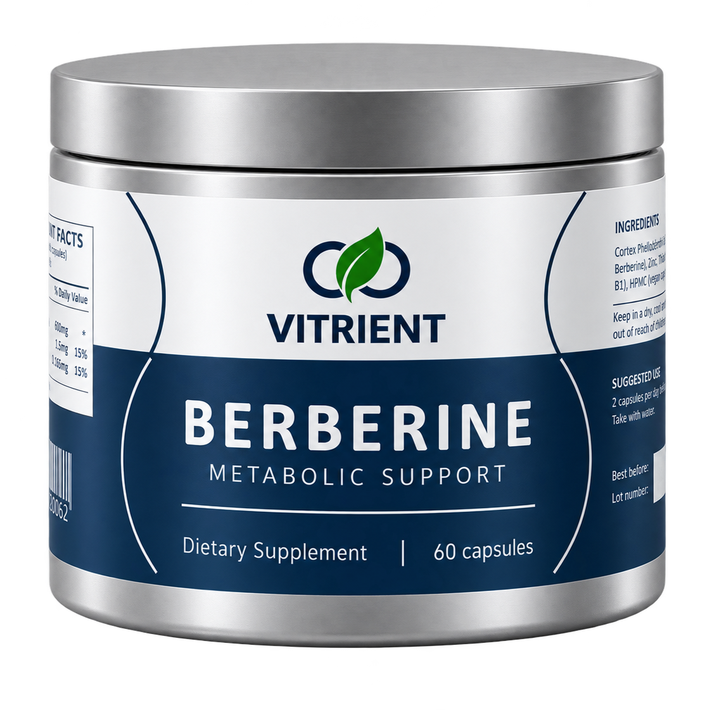
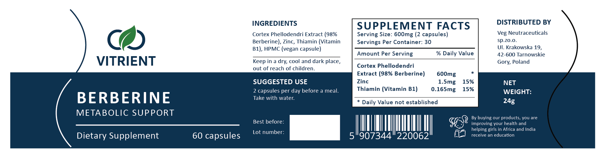

Veg Nutraceuticals
Website, e-commerce, branding, and digital marketing for a growing nutraceutical company.
Overview
From January 2022 to August 2025, I was a Web Design and Marketing Intern at Veg Nutraceuticals, working remotely for the company in Katowice, Poland. I managed website and e-commerce development while supporting product design, branding, and digital marketing for the growing nutraceutical company. [TODO: 1 sentence on what Veg Nutraceuticals makes, e.g. its Vitrient product line.]
My role
I worked across the website, product packaging, and marketing, using WordPress, Shopify, Adobe Illustrator, and Adobe Photoshop. [TODO: who you worked with and how much of your time went to each area.]
What I did
I redesigned the company website and optimized it for e-commerce with WordPress and Shopify, and handled SEO and started a personalized blog.
On the product side, I designed labels and posters and created product mockups, and devised a manual labelling apparatus. [TODO: how the labelling apparatus worked.]

For marketing, I created posts and ads for Instagram, Facebook, and Google.
Results
[TODO: outcomes, e.g. traffic, sales, or products launched with your packaging, and what you learned.]